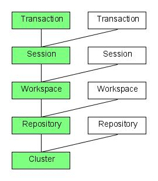
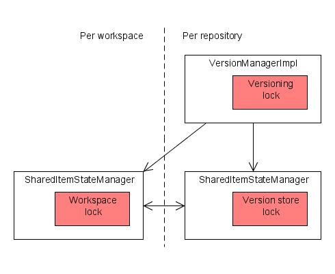
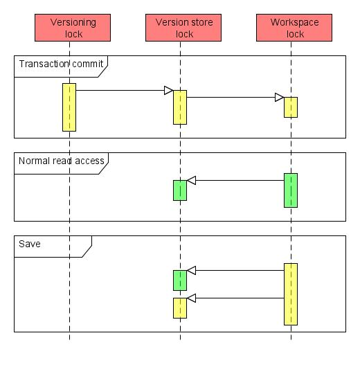

Concurrency control
The internal concurrency model in Apache Jackrabbit is fairly complex and a number of deadlock issues have been reported and fixed over the Jackrabbit 1.x release cycle. This document is the result of a design and code review targeted at proactively preventing other similar issues.
This document is about the internal concurrency and synchronization model in Jackrabbit, not about the JCR locking feature. Note that the review that led to this document targeted concurrency control at an architectural level and did not focus much on issues like thread-safety of individual classes or components.
This review is based on Jackrabbit version 1.5 in default configuration.
Architectural background
 In terms of concurrency control, the Jackrabbit architecture can roughly be divided to five main layers:
- Cluster
- Repository
- Workspace
- Session
- Transaction
The clustering layer takes care of synchronizing changes across one or more cluster nodes that are each treated as individual repositories that happen to share their content. Concurrency control across different cluster nodes is achieved using a single write lock that a cluster node is required to acquire before it can commit any changes to the shared state. On the other hand all cluster nodes can read the shared content in parallel with no explicit synchronization. Note that since the cluster nodes only share a single lock, a deadlock can not occur between the locks in one node and the ones in another. A single deadlocked node can still potentially block writes to the entire cluster, but the clustering feature can not add any new deadlock scenarios if each node would be deadlock-free by itself.
The repository layer takes care of all global repository state like the node type registry and the version storage. Instead of a single global repository lock, all the repository-wide components have their own synchronization mechanisms. The most notable component from a concurrency control point of view is the version storage, that actually contains two locking mechanisms; one in VersionManagerImpl for high level versioning operations and one in the underlying SharedItemStateManager for controlling access to the underlying persistence mechanism.
A repository consists of one or more workspaces that contain the normal content trees of the repository. Each workspace consists of a few components like the persistence mechanism and the search index. The persistence mechanism is built from a SharedItemStateManager that controls all item operations and a PersistenceManager that persists items in permanent storage. Most persistence managers use Java synchronization or some other locking mechanism for concurrency control, but since they typically don't interact much with other parts of the repository they are not that critical from a global concurrency perspective. On the other hand, the SharedItemStateManager that uses a read-write lock is a key element especially given the way it interacts with the repository-wide version store. Note that since Jackrabbit 1.4 it has been possible to configure locking strategy of the SharedItemStateManager to use a more fine-grained set of locks to allow concurrent write access to different parts of the content tree. This review focuses on the default case of having just a single SharedItemStateManager lock, but from a locking perspective the more fine-grained case is roughly equivalent to having more workspaces and thus the results of this review should still apply.
Each workspace can be accessed by zero or more JCR sessions. Each session contains a transient space that keeps track of all unsaved changes in that session. Since the transient space is local to a session and since a session should only be accessed by one thread at a time, there are few concurrency concerns associated with the use of sessions. However, note that the thread-safety requirements of sessions are in many cases not explicitly enforced by Jackrabbit, so a client that intentionally or accidentally uses a single session from multiple concurrent threads may well end up corrupting the internal state of the session.
Transactions are handled in Jackrabbit by wrapping all item operations (saved transient changes and direct workspace updates, as well as versioning and locking operations) into a sort of a larger transient space that gets persisted only when the transaction is committed. There is no "transaction lock" in Jackrabbit, but transaction support still fundamentally changes Jackrabbit concurrency control as it basically replaces all write operations (and related locking) with the larger commit operation. This transaction mode is only activated when a session is within the context of an XA transaction.
Main synchronization mechanisms
 The main synchronization mechanisms in Jackrabbit are the read-write locks in the SharedItemStateManager and VersionManagerImpl classes. Other components also have concurrency control features, for example the LockManagerImpl class (used for handling JCR locks) uses a reentrant lock and the NodeTypeRegistry class relies on Java synchronization. This review focuses on just the two main components as those are by far the most actively used and the ones that could potentially block all access to repository content in case of a deadlock. The three main locks to be concerned about are:
- "Workspace lock", the read-write lock of the per-workspace SharedItemStateManager
- "Versioning lock", the read-write lock of the repository-wide VersionManagerImpl
- "Version store lock", the read-write lock of the SharedItemStateManager associated with the version manager
Each of these locks can be locked exclusively for write access or inclusively for read access. In other words, any number of concurrent readers can keep the lock, but any single writer will block out all other readers and writers.
As noted in the section above, the workspace locks may also be collections of more finely grained locks, but this review concentrates on the default case. Note also that each workspace has it's own lock, so even if one workspace is exclusively locked, other workspaces can still be accessed.
Conditions for deadlocks
A deadlock can only occur if the holder of one lock tries to acquire another lock and there is another thread (or a series of other threads) that tries to do the reverse. This situation can only arise if a) locks are acquired in a nested sequence, b) different threads can acquire the nested locks in a different order, and c) at least two exclusive locks are being acquired.
Most operations in Jackrabbit avoid deadlocks in one of the following three ways:
- Only a single lock is held at a time, breaking condition a. This case covers most of the code doing sanity checks and other preparing work associated with many operations.
- In case of nested locks, the code guarded by the inner lock never tries to acquire another lock, breaking condition b. This case covers for example the numerous calls to the underlying persistence managers that typically have their own synchronization mechanism but never call out to other Jackrabbit components except perhaps the namespace registry that also satisfies this condition.
- None of the nested locks are exclusive. This covers all read operations in Jackrabbit, so a deadlock can never occur if all clients only read from the repository.
The potentially troublesome cases are two or more concurrent write operations with nested locks, or a write operation with two nested exclusive locks running concurrently with read operations with nested locks. See below for the results of the code review that tried to identify and clear such cases. The acquired write locks are marked in bold to make it easy to spot potential problems.
Code review
This section contains the results of a code review whose purpose was to identify the order and nesting of the locks acquired by many common operations in Jackrabbit. The results of the review were compared to the above conditions for deadlock.
Note that the descriptions of the write operations below assume non-transactional context. See the last subsection for the behaviour in transactional environments.
Normal read access
Read access to the workspace typically only requires a read lock on the SharedItemStateManager of that workspace, but since the version store is mapped to the virtual /jcr:system/jcr:versionStorage inside the repository, there are cases where also the read lock of the version store needs to be acquired.
- Workspace read lock, for reading normal node content
- Version store read lock, for reading version content
This nested lock is potentially unsafe in a transactional context, see the subsection on transaction commit below for more details.
Versioning read access
Some version accesses are handled directly through the version manager instead of looking through the /jcr:system/jcr:versionStorage tree. Such accessed are guarded with the VersionManagerImpl read lock.
- Versioning read lock, for accessing version information
- Version store read lock, for reading version information
The nested lock here is safe as the version store lock never covers code that tries to acquire the versioning lock.
Transient changes
All transient changes like those created by Node.addNode() or Session.move() are stored in the session-local transient space without needing any synchronization except for the read locks used for accessing the underlying workspace state. A write lock is only needed when the accumulated changes are being persisted using the save() call described below.
Save
The ItemImpl.save() method (that SessionImpl.save() also calls) collects all current transient changes to a single change log that is then persisted as an atomic update. Any new versionable nodes will cause empty version histories to be created in the version store. Note that ItemImpl.save() is synchronized on the current session, enforcing the rule that no two threads should be concurrently using the same session.
- Workspace read lock, for sanity checks and other preliminary work
- Multiple non-overlapping instances of (only when creating new version histories)
- Workspace read lock, for checking the current state of the nodes being modified
- Version store read lock, for checking whether a version history already exists
- Versioning write lock, for creating a new version history
- Version store write lock, for persisting the version history
- Workspace write lock, for persisting the changes
- Version store read lock, for checking references
- Version store write lock, for persisting updated back-references
Many of the other write operations below call ItemImpl.save() internally to persist changes in the current workspace. However, in the descriptions I've only included the last "Workspace write lock" branch (with the "Version store write lock" excluded if it's clear that no back-references need to be updated) as the operations are guaranteed to never contain cases where new version histories would need to be created.
Here we have three cases of nested locks involving one or more exclusive locks:
- Versioning write lock -> Version store write lock
- Workspace write lock -> Version store read lock
- Workspace write lock -> Version store write lock
All these nested locks are safe in non-transactional context since the version store lock never covers code that tries to acquire one of the other locks. The same is true for the first case also in transactional context, but see the transaction commit subsection below for a discussion of how the other two cases are different with transactions.
Merge and update
The Node.merge() and Node.update() methods both call NodeImpl.internalMerge() that acquires a new session on the source workspace and copies relevant content to the current workspace.
- Multiple non-overlapping instances of
- Source workspace read lock, for copying content to the current workspace
- Current workspace read lock, for comparing current status with the one being merged
- Current workspace write lock, for persisting the changes
- Version store read lock, for checking references
- Version store write lock, for persisting updated back-references
The nested locks above are discussed in the section on the save operation.
Copy, clone and move
The various copy(), clone() and move() methods in WorkspaceImpl use the similarly called methods in BatchedItemOperations to perform batch operations within a single workspace or across two workspaces. From a synchronization perspective these operations are much like the merge and update operations above, the difference is mostly that the source workspace may be the same as the current workspace.
- Multiple non-overlapping instances of
- Source workspace read lock, for copying content to the current workspace
- Current workspace read lock, for comparing current status with the one being copied
- Current workspace write lock, for persisting the changes
- Version store read lock, for checking references
- Version store write lock, for persisting updated back-references
The nested locks above are discussed in the section on the save operation.
Checkin
The NodeImpl.checkin() method first creates a new version of the node in the shared version store and then updates the appropriate mix:versionable properties of the node.
- Workspace read lock, for sanity checks and other preliminary work
- Versioning write lock, for creating the new version in the version store
- Workspace read lock, for copying content to the new version
- Version store write lock, for persisting the new version
- Versioning read lock, for accessing the newly created version
- Version store read lock, for reading the new version
- Workspace write lock, for updating the node with references to the new version
- Version store read lock, for checking references
- Version store write lock, for persisting updated back-references
The overlapping lock region above is not troublesome as there are no cases where a versioning lock is acquired within the scope of a workspace lock. Note that there previously were such cases, but this code review shows that all of them have since been solved.
The nested locks above are discussed in the sections on versioning read access and the save operation.
Checkout
The NodeImpl.checkout() method simply does some sanity checks and updates the versioning metadata of the node to reflect the changed state. No access to the shared version store is needed.
- Workspace read lock, for sanity checks
- Workspace write lock, for updating the node to reflect the checked out state
- Version store read lock, for checking references
The nested lock above is discussed in the section on the save operation.
Restore
The various Node.restore() and Workspace.restore() methods all end up calling NodeImpl.internalRestore() that copies contents of the selected version back to the workspace. Finally the changes are persisted with a ItempImpl.save() call.
- Multiple non-overlapping instances of:
- Versioning read lock, for copying content back to the workspace
- Workspace read lock, for comparing the current state with the version being restored
- Workspace write lock, for persisting the changes
- Version store read lock, for checking references
- Version store write lock, for persisting updated back-references
The nested locks above are discussed in the section on the save operation.
Transaction commit
 As discussed in the architecture section above, a transaction context overrides all the other write operations in favor of the two-phase commit driven by the transaction manager. The Jackrabbit part of a potentially distributed transaction is coordinated by the XASessionImpl class that causes the following locking behavior:
- Versioning write lock, for the entire commit
- Version store write lock, for persisting modified version histories
- Workspace write lock, for persisting modified content
- Version store write lock, for persisting modified version histories
The curious ordering of the locks is caused by the way the prepare and commit parts of the different transaction components are nested. This nesting of the workspace lock within the version store lock is a bit troublesome in comparison with the nesting in read operations and non-transactional writes where the order of the locks is reverse. The nesting order here can not be easily changed as any new versions and version histories need to be persisted before workspace content that refers to them. Possible solutions could be either to disable or redesign the reference checks done in a transactional context, or to relax transaction semantics by persisting the version history changes already in the prepare phase in which case the version store lock wouldn't need to cover the workspace lock. However, even before this issue is fixed, the impact is quite limited and can easily be worked around by typical clients.
In read operations the version store read lock is only acquired after the workspace lock if reading content in /jcr:system/jcr:versionStorage. Clients that never looks at the /jcr:system/jcr:versionStorage tree and uses the JCR API methods like getVersionHistory() to access version information will not trigger the potential deadlock case.
Write operations can only cause a deadlock when both transactional and non-transactional writes are performed concurrently against the same repository. A repository that is consistently accessed either transactionally or non-transactionally will not trigger this deadlock. Note that this restriction is workspace-specific, i.e. one workspace can safely be written to transactionally even if another workspace is concurrently written to non-transactionally.
Summary and future work
This review shows that while the internal locking behaviour in Jackrabbit is still far from simple, there aren't any major deadlock scenarios remaining. The two issues identified in the review can be easily avoided by following these two rules:
- Use the JCR versioning API instead of the /jcr:system/jcr:versionStorage tree to access version information
- Don't mix concurrent transactional and non-transactional writes to a single workspace
The transaction commit subsection above outlines some possible solutions to make even these workarounds unnecessary.
The following other potential improvements were identified during the code review:
- Storing the version history back-references in the workspaces that contain the references would simplify a lot of code and remove a major source of interaction between the workspace and version store when updating content. The downside of this change is that removing versions and version histories would be much more difficult as all workspaces would need to be checked for potential references.
- The current design contains lots of cases where read locks are acquired and released multiple times in sequence. This is often caused by the need to check the transient space when reading something from the repository. It might be useful to extend the workspace read lock to cover also all the transient spaces even when the transient spaces would still be session-specific.
- Adopting a single global repository lock for all per-repository components would simplify lots of code at the expense of some performance.